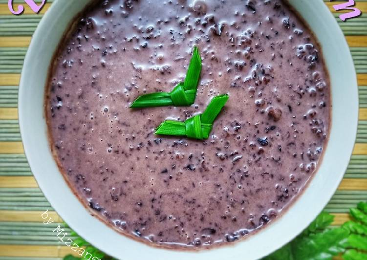

Bubur Pulut Hitam in an Instant Pot

A simple but delicious treat.
Prep time: 5 minutes
Cook time: 45 minutes
Total time: 50 minutes
Yield: 8 people
This sweet dessert is a childhood favorite made from black glutinous rice
porridge, coconut milk, and sugar. It is often served as a dessert or snack
at any time of day. However, it is also a breakfast favorite. This easy way
to make pulut hitam in an instant pot will make sure you have a steady supply
of this amazing food.
Ingredients:
- 1 1/2 cups black glutinous rice
- 3/4 cups coconut sugar or palm sugar
- 3 1/3 cups water
- 3 knotted pandan leaves
Steps:
-
Rinse the black glutinous rice briefly with a water and drain off water
-
Put the rice in a blender or a food processor and pulse it a few times, about 5-6 times (depending on your food processor or blender)
-
Do this until at least most of the rice grains are broken. Remember we want them to be in smaller pieces and not into a powder. When you cook, the starch will release faster making it creamier and shorten the cooking time
-
Put the rice in the inner pot of Instant Pot. Add sugar, pandan leaves, and water. Give it a stir. Close the lid. Turn the steam release valve to seal. Press "pressure cooker" and make sure it's on "high pressure" and set the timer to 30 minutes and then wait 10 minutes to release pressure
You're all done! To serve, use a ladle to put some bubur pulut hitam into a bowl and enjoy.
It can be served warm, room temperature, or cold.
Back to Top
Return to Home